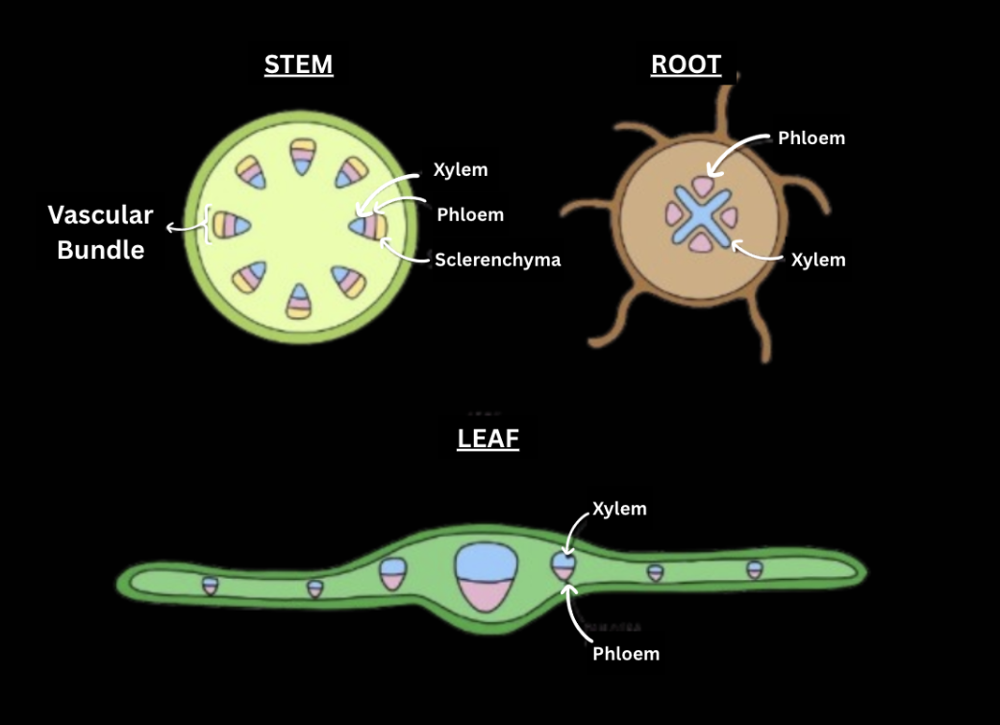

Plants utilize two main transport systems: xylem and phloem. These play a vital role in providing a plant with water, minerals and sugars.
Xylem
- Function: Transportation of water and dissolved minerals from the roots to the rest of the plant.
- Components: The xylem is composed of dead, hollow cells called xylem vessels and tracheids.
- Mechanism: Water moves through the xylem via a combination of root pressure, capillary action, and the cohesion-tension theory. This process is largely passive, so no energy is directly used. The main mechanism is called negative pressure (when water vapor evaporates from the plant via transpiration, a “gap” is created which pulls water in the roots and stems upward). It is so strong that it overcomes gravity in the process!

Ploem
- Function: Transportation of sugars produced during photosynthesis and other nutrients (e.g. amino acids, minerals, phytohormones and phytochemicals) from the leaves to other parts of the plant
- Components:The phloem consists out of living cells called sieve tubes and companion cells.
- Mechanism:Phloem transport can occur both upwards and downwards through the plant via positive pressure.
Active and passive transport:
Active transport: Requires energy, which enables transport proteins like the proton pump to transport protons out of cells (to perform the Electron Transport Chain in photosynthesis and cellular respiration).
Cotransport and ion channels play a crucial role, (e.g. in the transportation of nitrates in roots or potassium) in stomata.
Passive transport includes osmosis, and diffusion of water.
Please take note of the anatomy and positioning of the xylem and phloem. In the stem and root, the xylem is always the innermost. In the root, the xylem forms an X. However, the diagrams look a bit different when comparing monocot and dicot plants. The diagram below shows that of a dicot plant. Please refer to our Plant Anatomy page for more details.
Transpiration
- Transpiration is also an important component of transportation systems in plants.
- The majority of transpiration occurs through stomata, which release water vapor.
- Factors affecting this process include humidity, temperature, wind light and water availability.
- High humidity reduces the rate of transpiration, since there is less space for water vapor to move out the leaf.
- High temperatures and wind increase transpiration, as well as light exposure. Plants may also reduce transpiration in dependence of its water availability.
Symplast and Apoplast
In plant cells, the symplast and apoplast form continuous networks that enable the movement of water and dissolved minerals.
The Casparian strip blocks the apoplastic pathway in the endodermis of roots and forces water and solutes to enter the symplast.
| Symplast | Apoplast | |
|---|---|---|
| Definition | Cell walls and intercellular space | Continuous cytoplasm within cells |
| Movement | Diffusion and mass flow, fast | Osmosis and diffusion, slow |
| Nature | Living | Non-living |
Written by Tamara Bračko